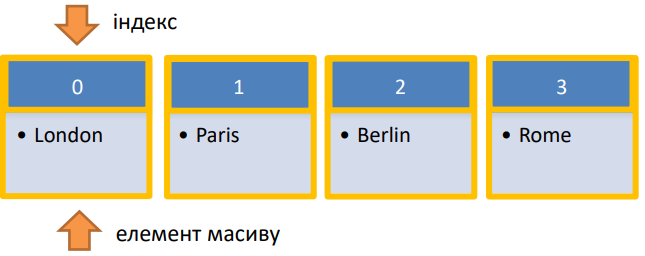

Масив – впорядкована колекція значень. В JavaScript масив може містити елементи будь-якого типу. Масив - це особливий вид об’єктів
let array = []; // пустий масив
let cities = ["London", "Paris", "Berlin", "Rome"];

let cities = ["London", "Paris", "Berlin", "Rome"];
cities[1] = 'Kyiv'
let city = cities[3];